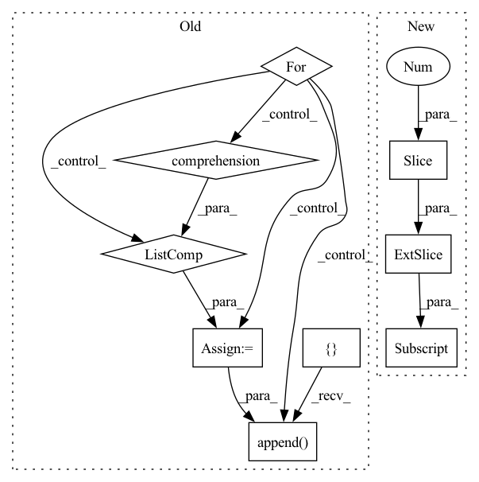

Pattern ID :41129
Before Change
else:
c_terms = preds_[:, (torch.ones(*N_mask.shape)-N_mask-CA_mask).bool() ]
// compute phis and count lower than 0s
phis_count = []
for i in range(preds.shape[0]):
// calculate phi angles
phis = [ get_dihedral_torch(c_terms[i,j-1], n_terms[i,j], c_alphas[i,j], c_terms[i,j]) \
for j in range(1, c_alphas.shape[-1]) ] // phi not allowed for first AA -> [1:]
phis_count.append( (np.array(phis)<0).sum() )
idx = np.argmax(phis_count)
// debugging/testing if arg passed
if verbose:After Change
else:
c_terms = preds_[:, (torch.ones(*N_mask.shape)-N_mask-CA_mask).squeeze().bool() ]
// compute phis and count lower than 0s
phis_count = [ (get_dihedral_torch(c_terms[i,:-1] , n_terms[i,:], c_alphas[i,:], c_terms[i,:])<0).sum().item() \
for i in range(preds.shape[0])]
idx = np.argmax(phis_count)In pattern: SUPERPATTERN
Frequency: 4
Non-data size: 9
Instances Fragment ID: 115916200
Project Name: lucidrains/alphafold2
Commit Name: 45a1bffd138fc5bddf28c382a492c539f0a4bc0b
Time: 2021-02-07
Author: ericalcaide1@gmail.com
File Name: alphafold2_pytorch/utils.py
M Class Name: AnonimousClass
N Class Name: AnonimousClass
M Method Name: fix_mirrors_torch(6)
N Method Name: fix_mirrors_torch(6)
M Parent Class:
N Parent Class:
M File Name: alphafold2_pytorch/utils.py
N File Name: alphafold2_pytorch/utils.py
M Start Line: 431
M End Line: 447
N Start Line: 444
N End Line: 453
Before Change
data = data.numpy()
embedding_batch = embedding_batch.numpy()
knn_indices = embedding_tree.query(embedding_batch, k=k, return_distance=False)
knn_means = []
for i, point in enumerate(embedding_batch):
point_knn_indices = knn_indices[i]
knn_data = np.array([dataset[idx] for idx in point_knn_indices] )
knn_means.append( np.mean(knn_data, axis=0))
knn_means = np.array(knn_means)
knn_r2.append(r2_score(data, knn_means))
return np.mean(knn_r2)
After Change
for data, embedding_batch in dataloader:
data = data.numpy()
embedding_batch = embedding_batch.numpy()
knn_indices = embedding_tree .query(
embedding_batch, k=k + 1, return_distance=False
)[:, 1 :]
knn_data = dataset[knn_indices]
knn = np.mean(knn_data, axis=1)
knn_metric.append(metric.transform(data, knn))
if verbose:
prog_bar.update(1) Fragment ID: 115916201
Project Name: jgraving/selfsne
Commit Name: 6d4f69204f6bbfa424a9dbd86eec6b16d90db078
Time: 2023-01-23
Author: jgraving@gmail.com
File Name: selfsne/eval.py
M Class Name: AnonimousClass
N Class Name: AnonimousClass
M Method Name: knn_probe_reconstruction(8)
N Method Name: knn_probe_reconstruction(6)
M Parent Class:
N Parent Class:
M File Name: selfsne/eval.py
N File Name: selfsne/eval.py
M Start Line: 104
M End Line: 120
N Start Line: 105
N End Line: 159
Before Change
else:
c_terms = preds_[:, (np.ones_like(N_mask)-N_mask-CA_mask).astype(bool) ]
// compute number of phis lower than 0
phis_count = []
for i in range(preds_.shape[0]):
// calculate phi angles
phis = [ get_dihedral_numpy(c_terms[i,j-1], n_terms[i,j], c_alphas[i,j], c_terms[i,j]) \
for j in range(1, c_alphas.shape[1]) ] // phi not allowed for first AA -> [1:]
phis_count.append( (np.array(phis)<0).sum() )
idx = np.argmax(phis_count)
// debugging/testing if arg passed
if verbose:After Change
else:
c_terms = preds_[:, (np.ones_like(N_mask)-N_mask-CA_mask).squeeze().astype(bool) ]
// compute number of phis lower than 0
phis_count = [ (get_dihedral_numpy(c_terms[i,:-1] , n_terms[i,:], c_alphas[i,:], c_terms[i,:])<0).sum() \
for i in range(preds.shape[0])]
idx = np.argmax(phis_count) Fragment ID: 115916202
Project Name: lucidrains/alphafold2
Commit Name: 45a1bffd138fc5bddf28c382a492c539f0a4bc0b
Time: 2021-02-07
Author: ericalcaide1@gmail.com
File Name: alphafold2_pytorch/utils.py
M Class Name: AnonimousClass
N Class Name: AnonimousClass
M Method Name: fix_mirrors_numpy(6)
N Method Name: fix_mirrors_numpy(6)
M Parent Class:
N Parent Class:
M File Name: alphafold2_pytorch/utils.py
N File Name: alphafold2_pytorch/utils.py
M Start Line: 465
M End Line: 486
N Start Line: 474
N End Line: 489